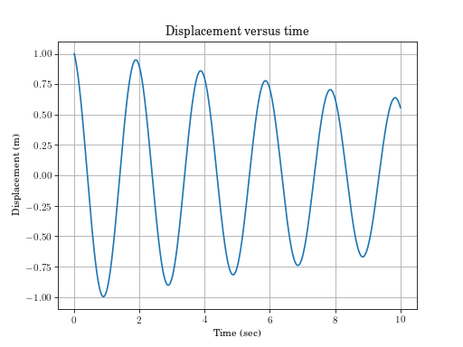
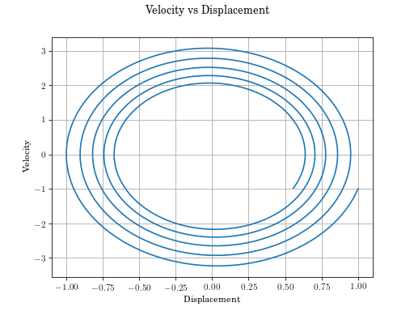

Single Degree of Freedom Systems (vibration_toolbox.sdof)¶
The vibration_toolbox.sdof
sdof – Single Degree of Freedom Functions¶
-
sdof.free_response(m=10, c=1, k=100, x0=1, v0=-1, max_time=10)[source]¶ Free response of a second order linear oscillator.
Returns t, x, v, zeta, omega, omega_d and A resulting from the free response of a second order linear ordinary differential equation defined by \(m\ddot{x} + c \dot{x} + k x = 0\) given initial conditions \(x_0\) and \(\dot{x}_0 = v_0\) for \(0 < t < t_{max}\)
Parameters: m, c, k : floats, optional
mass, damping coefficient, stiffness
x0, v0: floats, optional
initial displacement, initial velocity
max_time: float, optional
end time for \(x(t)\)
Returns: t, x, v : ndarrays
time, displacement, and velocity
zeta, omega, omega_d, A : floats
damping ratio, undamped natural frequency, damped natural frequency, Amplitude
Examples
(Source code, png, hires.png, pdf)

{kind=link}
{kind=link}
-
sdof.phase_plot(m=10, c=1, k=100, x0=1, v0=-1, max_time=10)[source]¶ Phase plot of free response of single degree of freedom system.
For information on variables see free_response.
Parameters: m, c, k: floats, optional
mass, damping coefficient, stiffness
x0, v0: floats, optional
initial displacement, initial velocity
max_time: float, optional
end time for \(x(t)\)
Examples
(Source code, png, hires.png, pdf)

{kind=link}
{kind=link}
-
sdof.phase_plot_i(max_time=(1.0, 200.0), v0=(-100, 100, 1.0), m=(1.0, 100.0, 1.0), c=(0.0, 1.0, 0.1), x0=(-100, 100, 1), k=(1.0, 100.0, 1.0))[source]¶ Interactive phase plot of free response of single degree of freedom system.
phase_plot_iis only functional in a Jupyter notebook.Parameters: m, c, k: floats, optional
mass, damping coefficient, stiffness
x0, v0: floats, optional
initial displacement, initial velocity
max_time: float, optional
end time for \(x(t)\)
-
sdof.time_plot_i(max_time=(1.0, 100.0), x0=(-100, 100), v0=(-100, 100), m=(1.0, 100.0), c=(0.0, 100.0), k=(1.0, 100.0))[source]¶ Interactive single degree of freedom free reponse plot in iPython
time_plot_iis only functional in a Jupyter notebook.Parameters: m, c, k: floats, optional
mass, damping coefficient, stiffness
x0, v0: floats, optional
initial displacement, initial velocity
max_time: float, optional
end time for \(x(t)\)
-
sdof.euler(m=1, c=0.1, k=1, x0=1, v0=0, n=8, dt=0.05)[source]¶ Euler method free response of a SDOF system.
Free response using Euler’s method to perform numerical integration.
Parameters: m, c, k: float
Mass, damping and stiffness.
x0, v0: float
Initial conditions
n: int
The number of steps
dt: float
The step size.
Returns: t, x, v: array
Time, displacement, and velocity
Examples
>>> euler(m=1, c=.1, k=1, x0=1, v0=0, n=8, dt=0.05) (array([ 0. , 0.05, 0.1 , 0.15, 0.2 , 0.25, 0.3 , 0.35, 0.4 ]), array([[ 1. , 0. ], [ 1. , -0.05], [ 1. , -0.1 ], [ 0.99, -0.15], [ 0.99, -0.2 ], [ 0.98, -0.25], [ 0.96, -0.29], [ 0.95, -0.34], [ 0.93, -0.39]]))
-
sdof.forced_response(m=10, c=0, k=100, x0=1, v0=0, wdr=0.5, F0=10, max_time=100)[source]¶ Harmonic response of SDOF system.
Returns the the response of an underdamped single degree of freedom system to a sinusoidal input with amplitude F0 and frequency \(\omega_{dr}\).
Parameters: m, c, k: float, optional
Mass Damping, and stiffness
x0, v0: float, optional
Initial conditions
wdr: float, optional
Force frequency
F0: float, optional
Force magnitude
max_time: float, optional
End time
Returns: t, x, y: array
Time, displacement and velocity
Examples
>>> f = forced_response(m=10, c=0, k=100, x0=1, v0=0, wdr=0.5, F0=10, max_time=100) >>> f[0][0] 0.0
-
sdof.transmissibility(zs, rmin, rmax)[source]¶ Returns a plot Displacement transmissibility ratio and force transmissibility ratio of a single degree of freedom damped system.
Parameters: zs: array
Array with the damping values
rmin, rmax: float
Minimum and maximum frequency ratio
Returns: r: Array
Array containing the values for the frequency ratio
D: Array
Array containing the values for displacement
F: Array
Array containing the values for force
Plot with Displacement transmissibility ratio and force transmissibility ratio
Examples
>>> r, D, F = transmissibility([0.01, 0.05, 0.1, 0.25, 0.5, 0.7], 0, 2) >>> D[10] 1.0100027508815634
-
sdof.rotating_unbalance(m, m0, e, zs, rmin, rmax, normalized=True)[source]¶ Returns a plot Displacement of a system with rotating unbalance.
Parameters: m: float
Mass of the system
m0, e: float
Mass and eccentricity of the unbalance.
zs: array
Array with the damping values
rmin, rmax: float
Minimum and maximum frequency ratio
normalized: bool
If true, the displacement is normalized (m*X/(m0*e))
Returns: r: Array
Array containing the values for the frequency ratio
Xn: Array
Array containing the values for displacement
Plot with Displacement displacement and phase for a system with rotating unbalance.
Examples
>>> r, Xn = rotating_unbalance(m=1, m0=0.5, e=0.1, zs=[0.1, 0.25, 0.707, 1], rmin=0, rmax=3.5, normalized=True) >>> Xn[1][10] (0.10104614704226758-0.0051182602098315527j)
-
sdof.impulse_response(m, c, k, Fo, max_time)[source]¶ Returns a plot with the response of the system to an impulse of magnitude Fo (N.s).
Parameters: m, c, k: float
Mass, damping and stiffness.
Fo: float
Force applied over time (units N.s)
max_time: float
End time
Returns: t: Array
Array containing the values for the time
x: Array
Array containing the values for displacement
Plot with the response of the system to an impulse of magnitude Fo (N.s).
Examples
>>> t, x = impulse_response(m=100, c=20, k=2000, Fo=10, max_time=100) >>> x[10] 0.0039629845398805623
-
sdof.step_response(m, c, k, Fo, max_time)[source]¶ Returns a plot with the response of the system to an step of magnitude Fo.
Parameters: m, c, k: float
Mass, damping and stiffness.
Fo: float
Force applied
max_time: float
End time
Returns: t: Array
Array containing the values for the time
x: Array
Array containing the values for displacement
Plot with the response of the system to an step of magnitude Fo.
Examples
>>> t, x = step_response(m=100, c=20, k=2000, Fo=10, max_time=100) >>> x[10] 7.9581008173000833e-05
-
sdof.fourier_series(dat, t, n)[source]¶ Fourier series approximation to a function. returns Fourier coefficients of a function. The coefficients are numerical approximations of the true coefficients.
Parameters: dat: array
Array of data representing the function.
t: array
Corresponding time array.
n: int
The desired number of terms to use in the Fourier series.
Returns: a, b: tuple
Tuple containing arrays with the Fourier coefficients. The function also produces a plot of the approximation.
Examples
>>> f = np.hstack((np.arange(-1, 1, .04), np.arange(1, -1, -.04))) >>> f += 1 >>> t = np.arange(0, len(f))/len(f) >>> a, b = fourier_series(f, t, 5) >>> a[0] 2.0
-
sdof.fourier_approximation(a0, aodd, aeven, bodd, beven, N, T)[source]¶ Plot the Fourier series defined by: N is the number of terms.
Parameters: a0: float or str
a0 Fourier coefficient.
aodd: float or str
an Fourier coefficient for n odd.
aeven: float or str
an Fourier coefficient for n even.
bodd: float or str
bn Fourier coefficient for n odd
beven: float or str
bn Fourier coefficient for n even
Returns: t, F: tuple
Tuple with time and F(t). It also returns a plot with the Fourier approximation.
Examples
>>> # Square wave >>> t, F = fourier_approximation(-1, 0, 0, '-3*(-1+(-1)**n)/n/np.pi', '-3*(-1+(-1)**n)/n/np.pi', 20, 2) >>> F[10] 1.2697210294282535 >>> # Triangular wave >>> t, F = fourier_approximation(0,'-8/np.pi**2/n**2',0,0,0,20,10) >>> F[10] -0.90234928911935097
-
sdof.response_spectrum(f)[source]¶ Will display the response spectrum to a partial ramp input(see Figure 3.13) for the system with natural frequency f (in Hz) and no damping.
Parameters: f: float
Natural frequency.
Returns: t, rs: tuple
Tuple with time and response arrays. It also returns a plot with the response spectrum.
Examples
>>> t, rs = response_spectrum(10) >>> rs[10] 1.6285602401720802